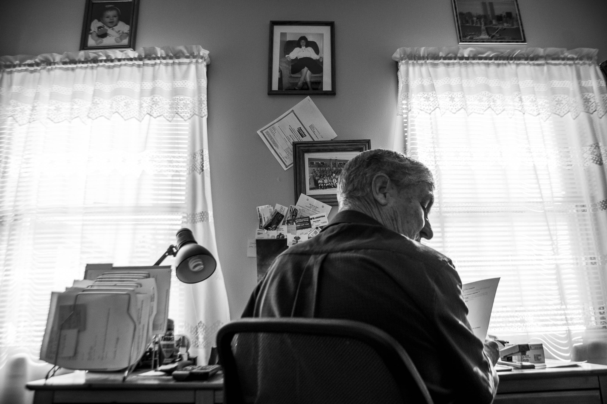
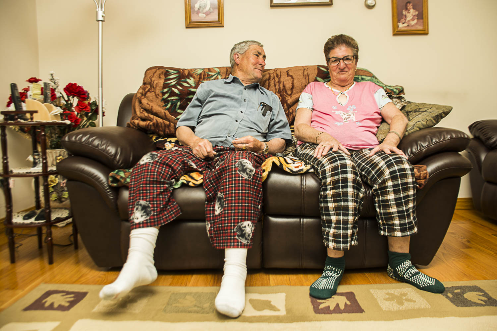
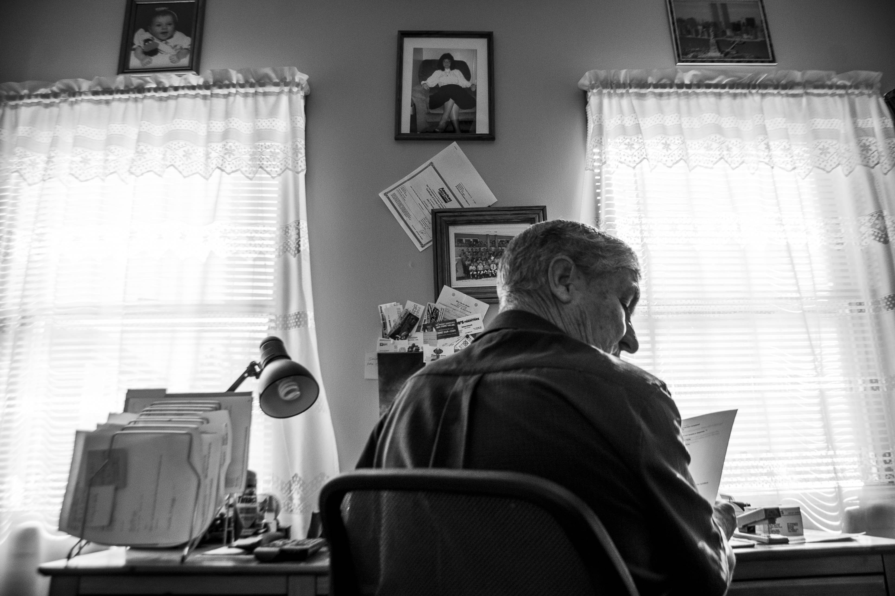
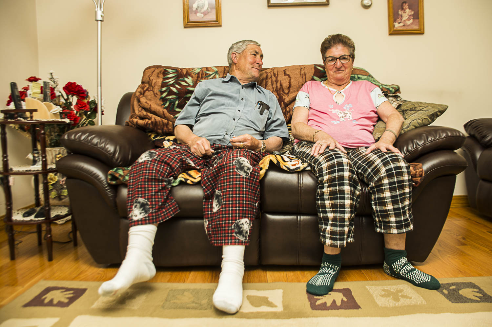

What is Family?
To me my family is not the generic clean cut version of what it should. There is a strong and very distant relationship between many of my relatives. Many whome I know many whom I dont do to fueds of the past and these so called dark family secrets no one likes to touch on. Yet everyone has a story.
Inspiration
As a photogrpaher many people assume that you shoot everything as often as you can like forsay the people around you. So naturally it is percieved that people close to use are easier to shoot since they feel comfortable already and familiar. I find the tense distant emotion in the diviosns in my family led to me not have this sense of comfort with some of my relatives. I find I like to almost hide away my work from my family and keep it my own personal thing thats a mystery. So I took it upon to try and get out my comfort zone and photograph my family. I chose my grandparents since they are very open when it comes to me and their other grandchildren. Growing up I spent most of my time living in the same home as them so they were crucial in my childhood and raised me.
The project began when I went over to sit at the table and have lunch with them I noticed how they were very humorous and peculiar people in the choice of decor and just funny whimsical attitudes they have as older people. No worries just always together at any meal my grandmother and grandfather.I sat at the table with them whilst shooting not interfering with posing. Next came adding a flash. Before I knew it I was exploring their lives and the details of their home and belongings. I have gone on to continue this project long term with more sit in portraits enviormentally. I find that I'm trying to make sense of my disruptive childhood and go back to the people who raised me which whom I've disconnected.
- STRONG
- LIVELY
- PROUD
Home to My Grandparents
The Local Newspaper
Click Here 


